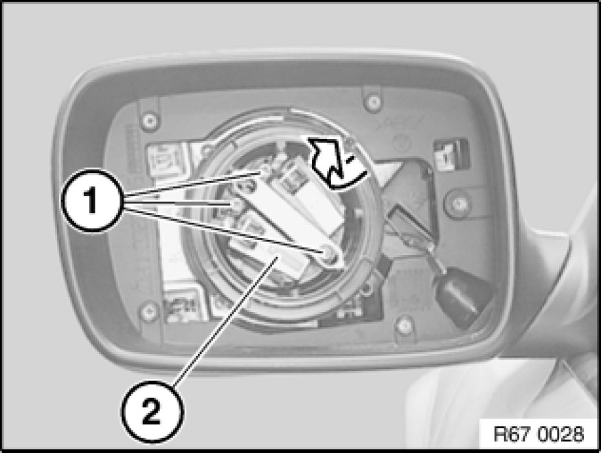
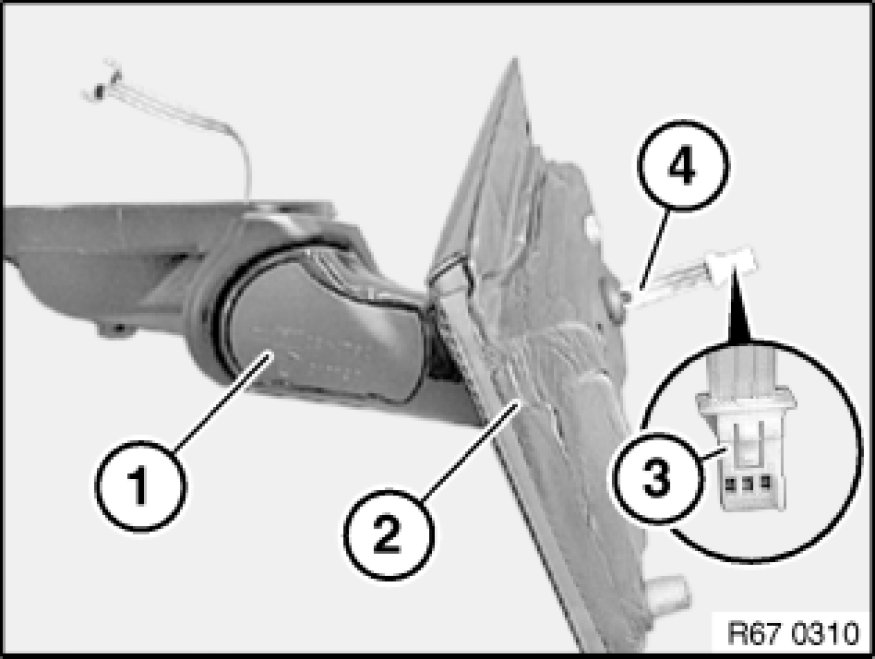
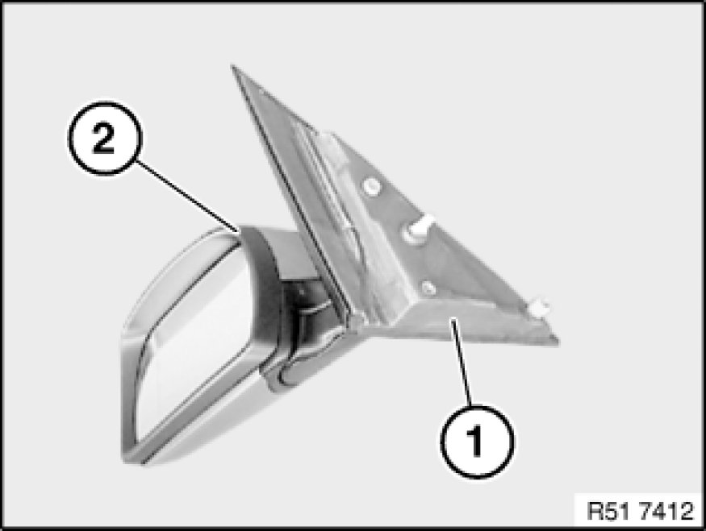

Replacing Drive Unit For Electrically Adjustable Left or Right Door Mirror (With Memory)
67 13 005 - Replacing drive unit for electrically adjustable left or right door mirror (with memory)

Special tools required:
- 61 1 150 61 1 150 Releasing Tool Kit

Necessary preliminary tasks:
- Remove mirror glass Replacing Mirror Glass for mirror
- Remove mirror on front door Removing and Installing/Replacing Mirror on Left or Right Front Door

Release screws (1).
Remove drive unit for electrically adjustable door mirror (2) in direction of arrow.

Unclip cap (1) with a suitable tool.
Remove sound insulation (2) from mirror. Correctly disconnect cable plug (3) with special tool 61 1 150 61 1 150 Releasing Tool Kit.
Feed out cable (4).
Installation:
Make sure ribbon cable (4) is correctly routed. Cable must not be kinked!

Installation:
Sound insulation (1) on mirror (2) must not be damaged.